Jelajahi keanekaragaman cita rasa dari berbagai belahan dunia dalam satu pengalaman yang mewah dan tak terlupakan.
Siapakah nama Anda untuk perjalanan rasa ini?
Silakan pilih satu menu yang ingin Anda nikmati.
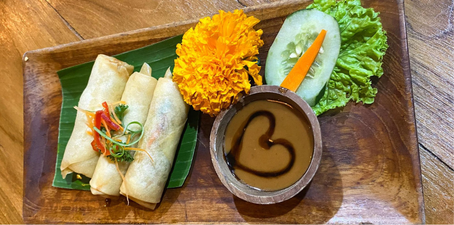
Dibuat dari sayuran segar seperti wortel,kol, dan kacang panjang, dipadukan dengan saus kacang yang gurih, melambangkan keberagaman dalam satu hidangan.
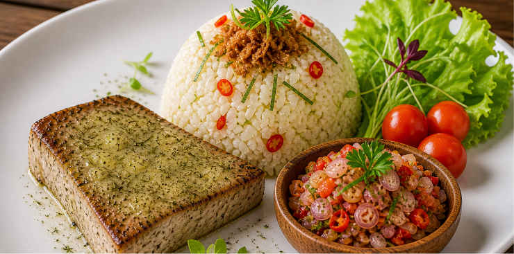
menggunakan tuna segar, daun jeruk, dan bawang khas Bali yang memberikan aroma segar dan cita rasa khas pesisir.
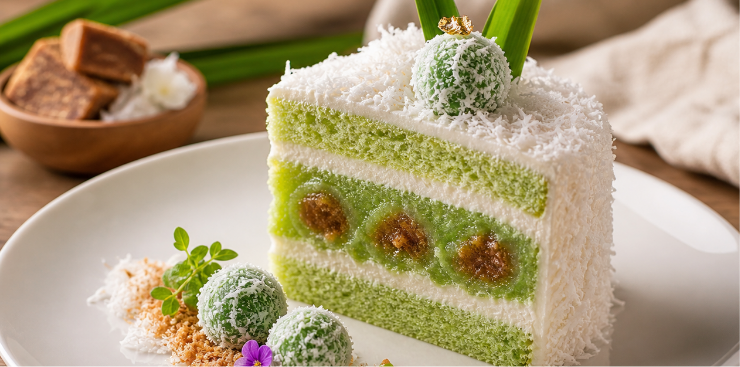
mengkombinasikan tepung, gula merah, dan kelapa, sebagai inovasi modern dari jajanan tradisional
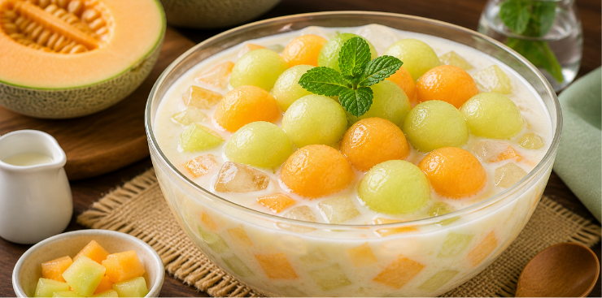
Berbahan dasar melon segar dan susu, memberikan kesegaran tropis Indonesia.
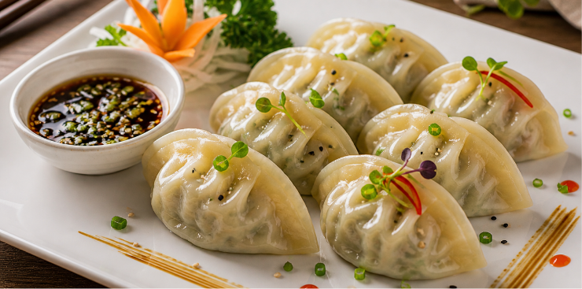
Berisi campuran daging ayam/sapi, sayuran, dan bawang putih, mencerminkan kehangatan makanan rumahan.
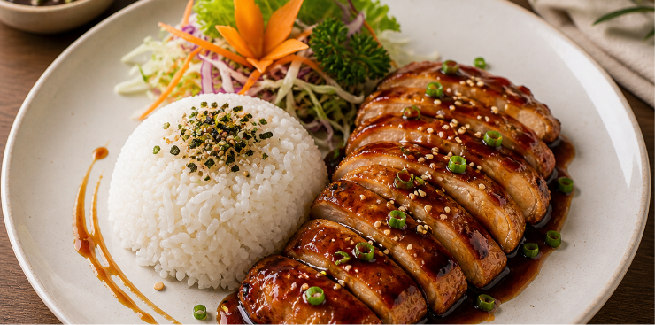
Menggunakan ayam, saus manis gurih, dan nasi putih sebagai sumber energi utama masyarakat Korea.
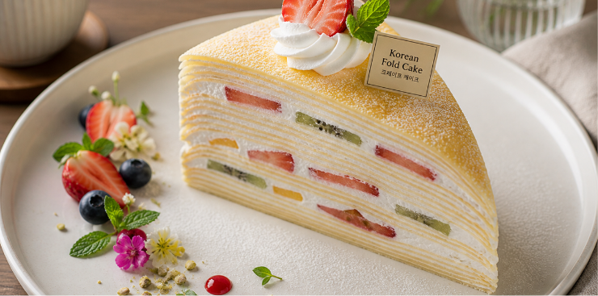
Dibuat dari krim, tepung, dan buah segar, mengikuti tren dessert modern yang estetik.
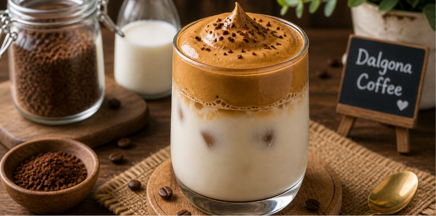
Berasal dari kopi, gula, dan susu yang dikocok hingga berbusa, menjadi simbol tren modern Korea.
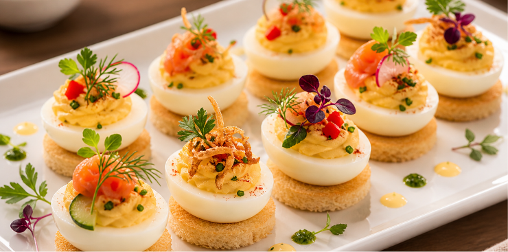
Terdiri dari roti kecil, telur, dan topping sederhana sebagai appetizer ringan.
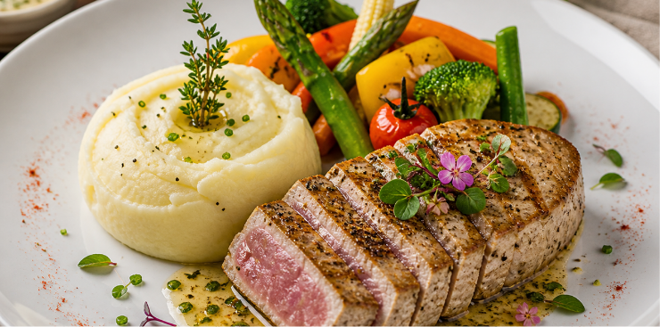
Menggunakan ikan tuna segar, kentang, dan mentega yang menghasilkan tekstur lembut dan rasa klasik Western.
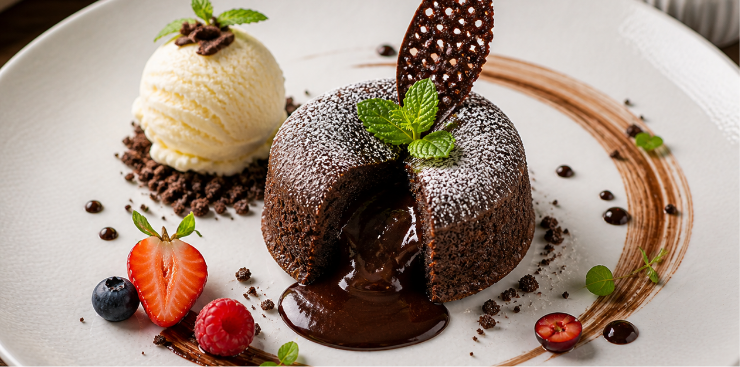
Berbahan cokelat, tepung, dan mentega dengan isi cokelat lumer yang memberikan kesan mewah.
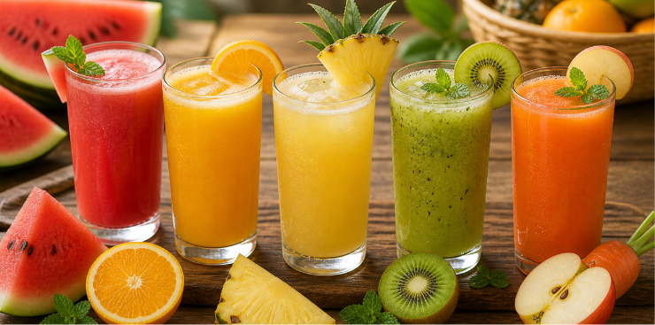
Minuman berbahan buah segar sering menjadi bagian dari pola makan sehat dan seimbang.
Apakah Anda sudah yakin dengan pilihan menu
?
Data Anda telah tersimpan dengan aman. Nikmati perjalanan Cultural Food Experience Anda!